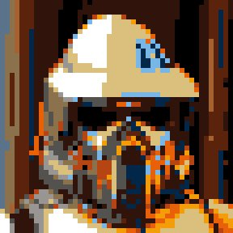
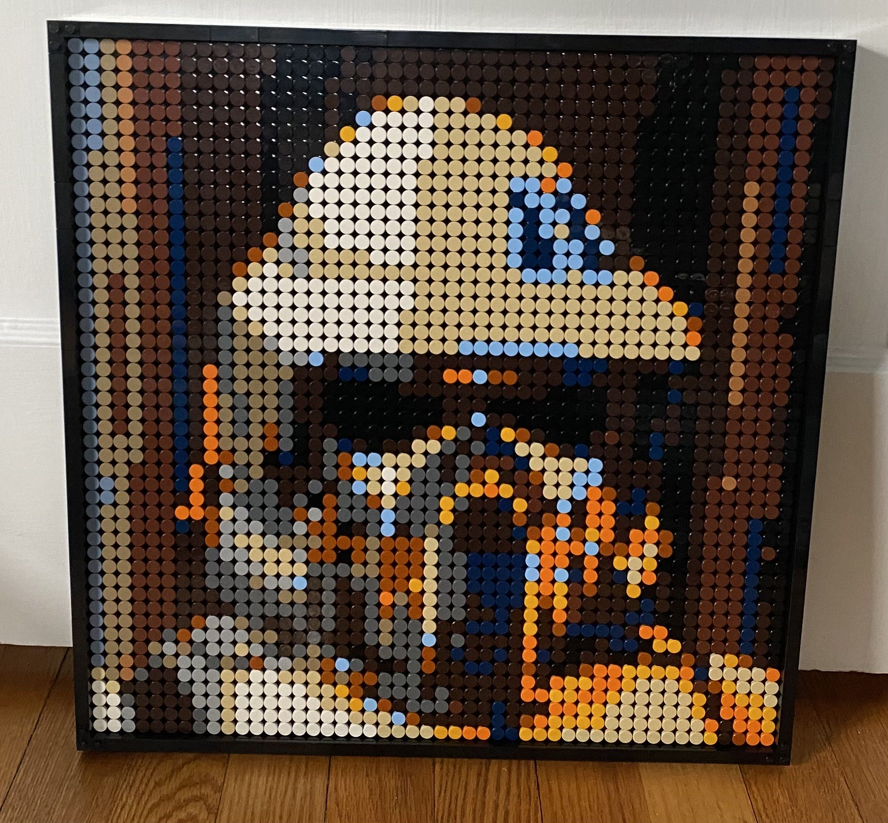
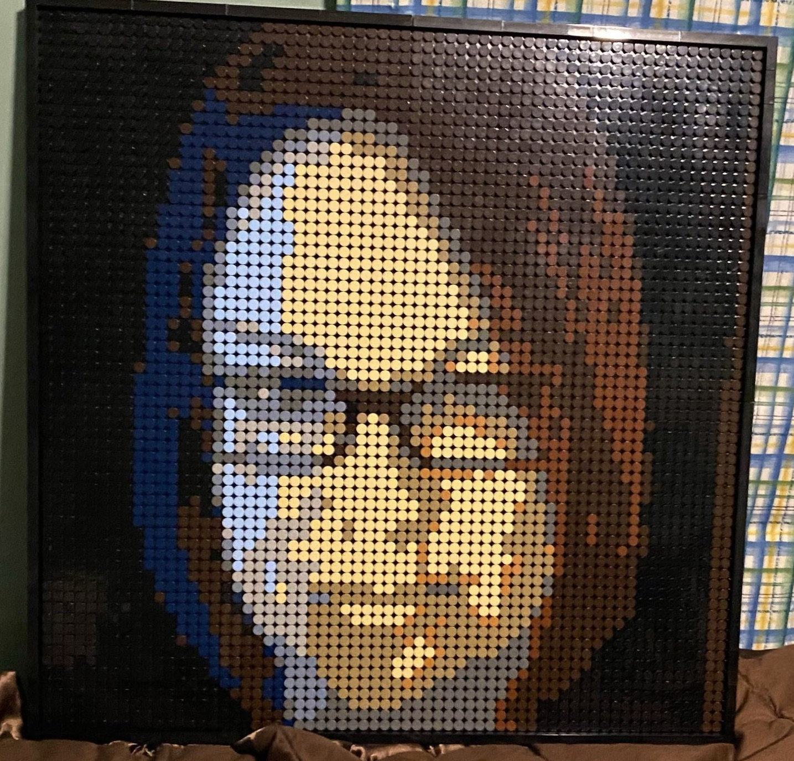
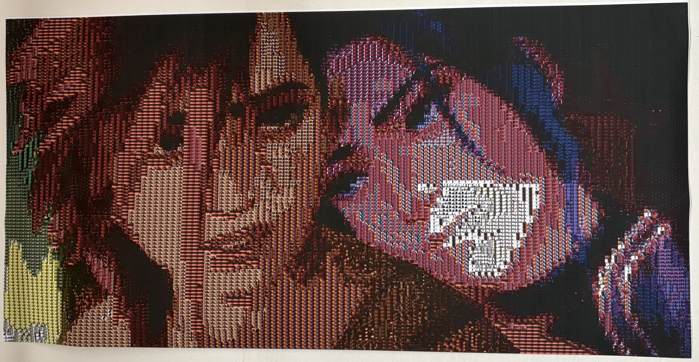

Family Digitization Videos
About a year or so ago, I found boxes of physical media in my grandmother's basement, including CDs, VHS tapes, film reels, and even 35mm slides as old as 1913. After digitizing all ~2,000 media files, I sorted, reviewed, and edited the best footage into 5 themed videos, each 30-45 minutes long and representing a different section of time. After all this, I held a viewing party for my grandmother's 80th birthday, and it was absolutely lovely. The videos are unlisted, and, for privacy reasons, I'm only including the video chronicling the oldest time frame (it's also the coolest one).
Lego Mosaic Project
The Lego Mosaic Project I started all the way back in high school. During the holidays, I had received a Lego set that could be made into a mosaic of any one of the four Beatles. I figured, because of that, there are extra pieces. So, what if I could make a mosaic of whatever image I wanted? I made the below mosaic of an ARF Trooper from Star Wars, and then built it in real life to make sure that my program worked. For the next mother's day, I expanded the program to allow for multiple sets and alternate frame dimensions, and made my Mom one of herself, which might be one of the best presents I've ever given. I continued to expand the program, but eventually moved on. In college, I went back to my code and rewrote and properly commented them, making them far more readable. I'll give myself credit for making this back in high school, but I've learned much better code-writing practices since then.



Riverdale Mosaic Project
For Valentine's Day 2026, I wanted to do something nice for my significant other, and came up with the idea of making her a mosaic, similar-ish to my Lego mosaic. She loves Riverdale, and we had just finished the second season of Riverdale together, so I decided to make a program to turn an input image into a mosaic made entirely of frames from Riverdale Season 2. I also decided on a frame from Arcane Season 2 as the input image, as that was another show that meant a lot to us. This entire idea was absolutely over-the-top, but I got to work on it, and the final run of the program, after days of working on efficiency, came out to 36 hours. I then printed this with enough detail that each individual frame is visible in the actual poster. Unfortunately, the full image is a bit big (~250mb), so instead the below image displays the mosaic's appearance in real life.

Poker Animation
For a class in my senior year of college, I made a simple little comedic Blender animation about two knights playing poker. I put it here because, although it's fairly small, I'm really proud of it.
This website!
Honestly, making this website has been such a good experience. It has taught me so much about using raw HTML and CSS, and made me far more confident in all my accomplishments. Thanks for stopping by!